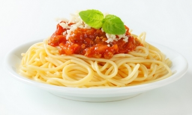
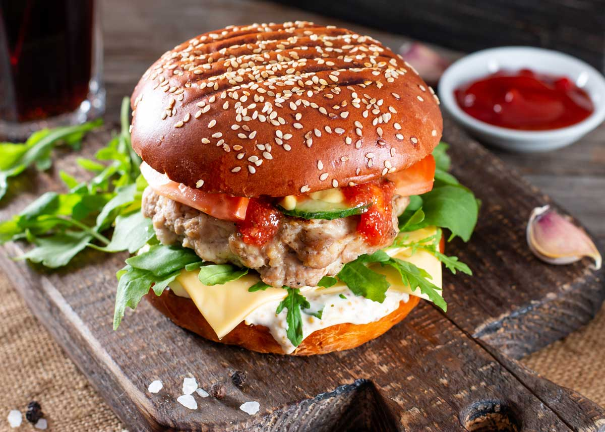

RECETAS PARA TODOS
Cocina Fácil
Descubre recetas sencillas, deliciosas y fáciles de preparar. Aprende paso a paso y disfruta de la cocina.
Explorar recetas
RECETAS
Elige tu próxima receta
Encuentra preparaciones sencillas con ingredientes fáciles de conseguir.


RECETA DESTACADA
Espaguetis con tomate
Una receta sencilla para preparar un plato delicioso en casa.
Ingredientes
- 200 gramos de espaguetis
- 2 tomates
- 1 cucharada de aceite
- 50 gramos de queso
- Sal al gusto
Preparación
- Cocina los espaguetis siguiendo las instrucciones del paquete.
- Prepara la salsa de tomate en una sartén.
- Mezcla la pasta con la salsa.
- Agrega queso y sirve.
Escucha la preparación
Puedes escuchar una explicación de la receta utilizando el reproductor de audio.
Leer la transcripción del audio
Para preparar los espaguetis con tomate, primero cocina la pasta siguiendo las instrucciones del paquete.
Después prepara la salsa de tomate en una sartén y mezcla la pasta con la salsa.
Finalmente agrega queso al gusto y sirve el plato.
Video: preparación de la receta
Aprende visualmente cómo preparar los espaguetis paso a paso.
El video muestra los pasos para cocinar espaguetis con salsa de tomate.
Hamburguesa casera
Una preparación sencilla para disfrutar una hamburguesa hecha en casa.
Ingredientes
- Pan para hamburguesa
- Carne para hamburguesa
- Lechuga
- Tomate
- Queso
Consejos para cocinar
- Lee la receta completa antes de comenzar.
- Prepara todos los ingredientes antes de cocinar.
- Utiliza utensilios adecuados para cada preparación.
- Mantén limpia y organizada tu zona de trabajo.
CONTACTO
Sugiere una receta
¿Tienes una receta que te gustaría compartir? Envíanos tu sugerencia.